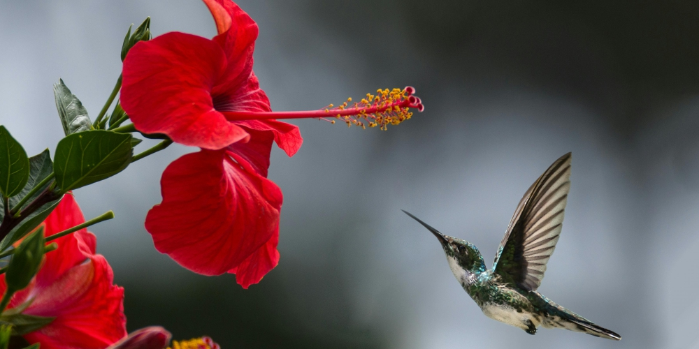
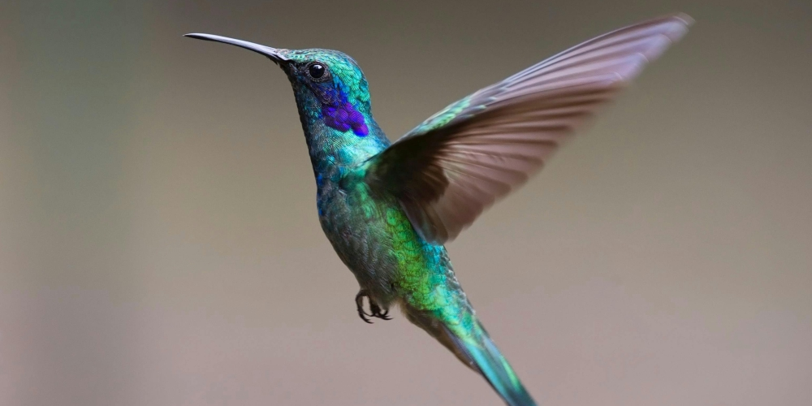

Existen más de 330 especies en el mundo
Existen alrededor de 330 especies de colibríes y viven solamente en América. En Costa Rica viven alrededor de 54 especies y en Estados Unidos sólo 20 especies. La familia de los colibríes se extiende desde Alaska hasta Tierra del Fuego, pero la mayor parte se concentra en los trópicos.

Morfología
Los colibríes, también conocidos como picaflores, chuparrosas, tucusitos, pájaros mosca, ermitaños o quindes, son una familia de aves apodiformes endémicas de América. Se caracterizan por el colorido de su plumaje, su tamaño minúsculo, su forma de volar y por los hábitos peculiares de alimentación que poseen.

Especies
El peso de los colibríes oscila entre pequeño como 2 gramos y tan grande 20 gr Tienen unos picos largos y estrechos que pueden ser rectos de longitudes variables o muy curvos El colibrí abeja de sólo 6 cm de longitud y un peso de unos 2 gr es el ave más pequeña del mundo y el vertebrado de sangre caliente más pequeño del mundo.

Ciclo vital
Las hembras de colibrí construyen un nido que se asemeja a una pequeña taza de aproximadamente 1,5 pulgadas (3,8 cm) de diámetro, comúnmente unida a una rama de árbol utilizando telas de araña, líquenes, musgo y cuerdas sueltas de fibras